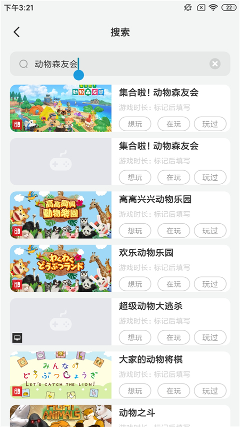
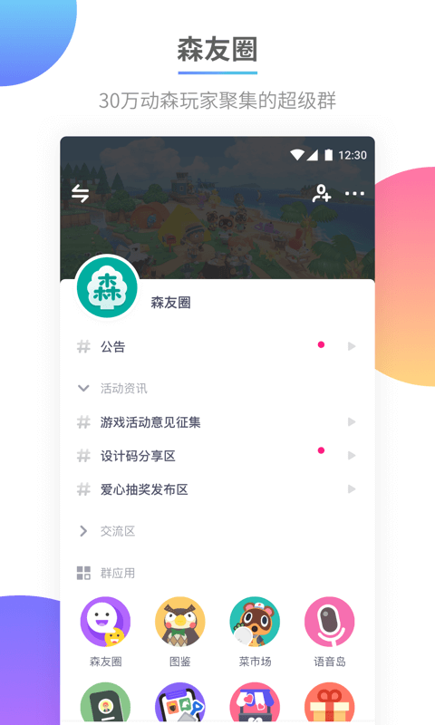

DoDo 上手测评：这款专为游戏玩家做的群聊工具，用了一周我把 Discord 晾在一边了
作为一个动森老玩家，从朋友那儿听说 DoDo 之后抱着试试看的心态装了。一周下来聊聊真实体验——群应用体系确实有东西，发现页找同好比想象中顺手，但有些地方也确实粗糙。
说实话，我一开始是抱着"又来一个 Discord 克隆"的心态从 DoDo官网装的。上个月朋友在 Switch 上喊我联机动森，说他们群里用的就是这个，让我赶紧下载。我对新社交软件的耐心向来有限——注册登录、翻隐私协议、加好友验证，这套流程每多一步劝退一分。但那次朋友已经在语音频道等我了，我咬咬牙还是走完了。
安装和第一眼界面
从官方下载拿到的安装包体积约 75MB，不算轻但也不离谱，手机上几分钟就装好了。注册用手机号就行，发验证码，没什么花样。进去之后我第一反应是"哦，真的不一样"——不是界面风格上的不同，是整个产品结构的思路就和常见的聊天软件不一样。
普通 IM 软件进来是好友列表、消息列表；DoDo 进来直接是"超级群"的概念。官方说现在有 1000+ 超级群，覆盖各种游戏。底部导航四个大按钮，放大镜那个就是"发现"——朋友跟我说"直接去发现页搜动物森友会，找个大群先进去蹲几天"，这就是我在这个平台上的第一个操作。

发现页找群：这一步比我想象中好使太多
发现页的布局很直白：顶部搜索框，下面是分类标签。点"游戏"分类能看到一堆热门游戏标签，动物森友会、原神、三国志战略版都在里面。我搜了"动物森友会"，出来好几个群卡片，每个群标着成员规模、一句话简介，还有个"想玩/在玩/玩过"的标记。点进去能看到群详情——频道结构、群应用、群规摘要，确认不是水群才点加入。
这点和我以前在 QQ、微信群找同好的体验完全不同。那些平台找群要么靠熟人拉，要么在贴吧蹲号，加了之后才发现群里全是广告或者没人说话。DoDo 把群的活跃度、群应用、频道结构直接摆到加入前能看到的地方，试错成本低了一大截。
群应用体系：真正让我觉得"这个产品有点东西"的地方
进了森友圈之后我才明白朋友说的"群里有工具箱"是什么意思。手机端进群后，频道列表里除了文字频道、语音频道，还混着一排应用图标——森友圈、图鉴、菜市场、语音岛，一字排开。这不是全局统一的功能，是这个群独有的工具集，换个游戏的群就是另一套应用。

我先点开了菜市场——就是动森玩家都懂的大头菜买卖排队工具。进去看了下，界面上有当前价格、排队上岛的队列、还有"全岛广播"说谁家卖高价。以前为了买高价大头菜，我要在 Switch 上不停刷新好友列表等朋友开门，现在在群里排队就行，轮到自己了进语音频道报个房号，上岛交易，比线下蹲方便太多。
另一个让我印象深的是图鉴应用。动森里鱼、虫、化石、DIY 配方一大堆，图鉴进度跟着账号走，换手机不丢。我在这个应用里看到自己好多鱼还没抓着，群里其他人晒的稀有标本直接点就能看，还能发评论求带。
说实话，这套"一群一策"的设计思路真的挺聪明的。普通聊天软件的群功能是全局的——接龙、投票、群公告，每个群都一样，群主没得选。DoDo 把工具沉到社群里，每个群按自己的主题装不同的工具箱。动森群有菜市场和图鉴，别的游戏群装别的，发现工具和发现同好是同一步。我为了菜市场进森友圈，顺手就认识了排队上岛的人——这个设计比我一开始想的有意思多了。
语音频道和日常聊天：够用但不惊艳
语音频道是 DoDo 比较基础的功能。进了森友圈之后，语音频道有常驻的，也有事前约定的。我第一次进语音频道还愣了一下——界面里每个人有一个小圆头像，在麦上的人头像有绿框，下面是音量条。音质还行，蓝牙耳机能用，没碰到什么设备兼容问题。官方说过 5.0 版本修过蓝牙耳机用手机麦克风采集声音的 bug，我这次没踩雷。
文字聊天和帖子频道的体验中规中矩。群里有人会发帖子攻略、造景截图，有定价机制——官方调整过不止一次规则，我到现在也没完全搞明白，后来翻了 DoDo文档才捋清楚个大概，反正发帖能赚积分或者什么的，不重要，不影响我看内容。
适合谁，不太适合谁
用了一周，我觉得 DoDo 最适合的是有明确游戏社群需求的玩家——特别是动森、原神、三国志这类有大量联机互动需求的游戏。群应用体系对这类玩家的价值太直接了，排队上岛、图鉴同步、云相册同步，这些是 QQ 微信群永远不可能给你的。
但如果你只是想找个轻量的聊天工具，或者你玩的游戏还没进 DoDo 的超级群生态，那大概率会觉得这东西"功能太臃肿"。发现页只能搜游戏标签，小众一点的兴趣群可能找不到；群应用虽然好，但学习成本比普通聊天软件高——你得先搞明白进群之后哪个是哪个。
还有一个小吐槽：机器人开发这件事虽然官方支持，流程也说得清楚（申请权限 → 创建机器人拿 appid 和 token → 配事件接收 → 照着开发文档写），但 token 这种敏感凭证等于机器人的账号密码，官方文档里反复强调别贴到公开频道——我还是在群里见过有人不小心发出来的，平台好像也没做自动脱敏。小细节，但如果真有人拿去乱搞机器人就麻烦了。
总结
DoDo 不是一款"通用"的聊天软件。它从根上就是为游戏玩家做的，群应用体系是它的核心竞争力——这点和 Discord、QQ、微信群聊都不一样。我这一周用下来，最爽的就是进群之后直接能用的菜市场和图鉴，不用我另外找工具。最不爽的是有时候想找个非游戏相关的兴趣群，发现页就帮不上忙了。
对我来说，现在动森联机的时候我会优先开 DoDo，其他时候还是微信为主。如果你也是个有明确游戏社群需求的玩家，我觉得你可以试试——至少进发现页搜一下你的游戏，看看有没有对应群，万一刚好有呢。常用的这些参考内容在GitHub、Gitee和GitCode上也能找到，怕官方文档哪天改了对不上的话可以去那边看看。